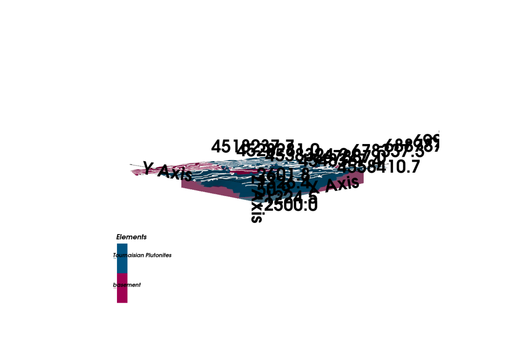

Note
Go to the end to download the full example code.
Simple Geological Model - Tharsis Region¶
This example creates a simple 3D geological model of the Tharsis region using GemPy.
Import Libraries¶
import numpy as np
import gempy as gp
# Set random seed for reproducibility
np.random.seed(1234)
Setting Backend To: AvailableBackends.PYTORCH
Import paths configuration
from mineye.config import paths
Define Model Extent and Resolution¶
The model covers the Tharsis mining district
min_x = -709521
max_x = -675558
min_y = 4526832
max_y = 4551949
max_z = 505
model_depth = -500
extent = [min_x, max_x, min_y, max_y, model_depth, max_z]
# Model resolution: use octree with refinement level 5
resolution = None # Using octrees instead of regular grid
refinement = 5
Get Data Paths¶
Load paths to structural data
mod_or_path = paths.get_orientations_path()
mod_pts_path = paths.get_points_path()
print(f"Orientations: {mod_or_path}")
print(f"Points: {mod_pts_path}")
Orientations: /home/leguark/PycharmProjects/Mineye-Terranigma/examples/Data/Output_Data/Simple-Models/temp_inputs/orientations_mod.csv
Points: /home/leguark/PycharmProjects/Mineye-Terranigma/examples/Data/Output_Data/Simple-Models/temp_inputs/points_mod.csv
Create GemPy Geological Model¶
Build the model structure with imported structural data
simple_geo_model = gp.create_geomodel(
project_name='simple_model',
extent=extent,
refinement=refinement,
resolution=resolution,
importer_helper=gp.data.ImporterHelper(
path_to_orientations=mod_or_path,
path_to_surface_points=mod_pts_path,
)
)
Map Geological Units¶
Define the stratigraphic stack
gp.map_stack_to_surfaces(
gempy_model=simple_geo_model,
mapping_object={
"Tournaisian_Plutonites": ["Tournaisian Plutonites"],
}
)
Compute the Model¶
Run the interpolation algorithm
gp.compute_model(simple_geo_model)
print("✓ Model computed successfully")
Setting Backend To: AvailableBackends.PYTORCH
Using sequential processing for 1 surfaces
/home/leguark/.venv/2025/lib/python3.13/site-packages/torch/utils/_device.py:103: UserWarning: Using torch.cross without specifying the dim arg is deprecated.
Please either pass the dim explicitly or simply use torch.linalg.cross.
The default value of dim will change to agree with that of linalg.cross in a future release. (Triggered internally at /pytorch/aten/src/ATen/native/Cross.cpp:63.)
return func(*args, **kwargs)
✓ Model computed successfully
Model with Topography¶
Add topographic surface from DEM
topography_path = paths.get_topography_path()
gp.set_topography_from_file(
grid=simple_geo_model.grid,
filepath=topography_path,
crop_to_extent=[-695558, simple_geo_model.grid.extent[2],
simple_geo_model.grid.extent[1], simple_geo_model.grid.extent[3]]
)
# Recompute with topography
gp.compute_model(simple_geo_model)
print("✓ Model with topography computed successfully")
Active grids: GridTypes.OCTREE|TOPOGRAPHY|NONE
Setting Backend To: AvailableBackends.PYTORCH
Using sequential processing for 1 surfaces
✓ Model with topography computed successfully
Visualize the Model¶
Create 3D visualization of the geological model
import gempy_viewer as gpv
gpv.plot_3d(simple_geo_model, ve=5, image=True)

/home/leguark/PycharmProjects/gempy_viewer/gempy_viewer/modules/plot_3d/drawer_surfaces_3d.py:38: PyVistaDeprecationWarning:
../../../gempy_viewer/gempy_viewer/modules/plot_3d/drawer_surfaces_3d.py:38: Argument 'color' must be passed as a keyword argument to function 'BasePlotter.add_mesh'.
From version 0.50, passing this as a positional argument will result in a TypeError.
gempy_vista.surface_actors[element.name] = gempy_vista.p.add_mesh(
<gempy_viewer.modules.plot_3d.vista.GemPyToVista object at 0x7f836e4c0d70>
Total running time of the script: (0 minutes 1.830 seconds)